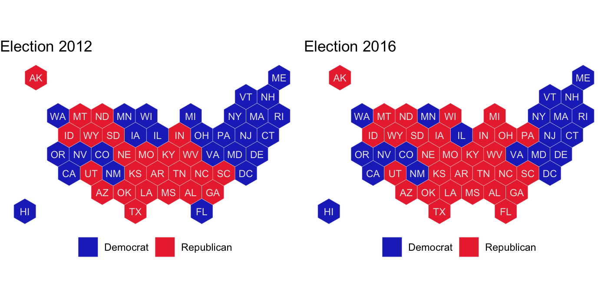

R package for visualizations of election (or poll) results as easy as adding geom_electoral_building.
Installation
The development version from GitHub with:
Example
We will be inundated with information about the state of the polls in the build-up to the upcoming Presidential election of 2020.
With the tools of this package you will be able to pick your favorite visualization(s) and explore the results your own way.
Hexbin Cartogram of Election Results by State
Each state is represented by one hexagon. This map has been made available by Andrew X Hill at CARTO.
data(elections)
el12 <- elections %>% filter(year == 2012)
gg12 <- hexplot(el12$state, el12$perc_rep > el12$perc_dem) +
scale_fill_party("", labels=c("Democrat", "Republican")) +
theme(legend.position = "bottom") +
ggtitle("Election 2012")
el16 <- elections %>% filter(year == 2016)
gg16 <- hexplot(el16$state, el16$perc_rep > el16$perc_dem) +
scale_fill_party("", labels=c("Democrat", "Republican")) +
theme(legend.position = "bottom") +
ggtitle("Election 2016")
gridExtra::grid.arrange(gg12, gg16, ncol=2)
Hexbin Cartogram of the US Presidential Election by Electoral Votes
Each state is represented by a set of hexagons corresponding in number to the state’s electoral votes. This map was adapted from the object sf_FiveThirtyEightElectoralCollege in Bhaskar Karambelkar’s R package tilegramsR.